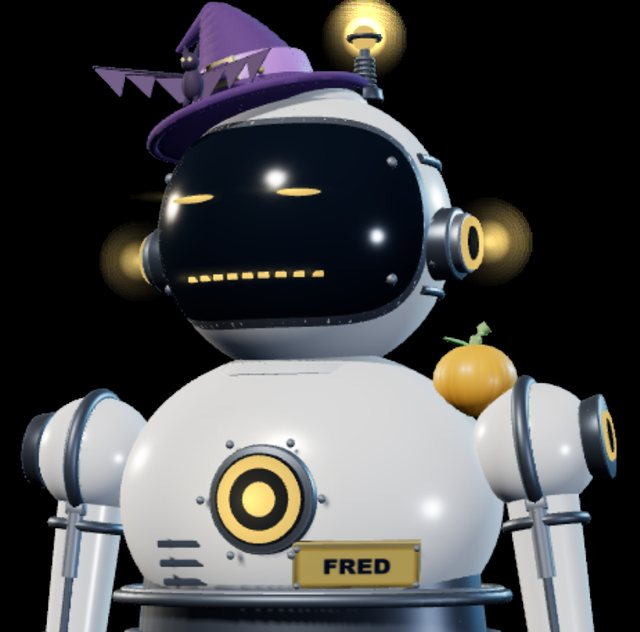

Meet FRED
On air
FRED is a robot meteorologist that never goes off the air.
He watches the National Weather Service, the Storm Prediction Center and live radar around the clock, then tells you what matters in plain English. Warnings, outlooks, your town's forecast, and the odd weather story.

What FRED does
One anchor, a lot of weather
FRED covers the national picture and your corner of it, live and on demand.
Severe weather coverage
Tornado, severe thunderstorm and flash flood warnings, watches and discussions, explained as they happen and kept in order of how much they matter.
Forecasts for your town
Ask for a place and FRED gives you the next few periods, rain chances and wind, with the time the forecast was issued shown on screen.
Videos and Shorts
Daily outlook videos and quick vertical answers like "Will it rain in Louisville tomorrow?", made with FRED as the host.
Talks with chat
Viewers ask questions and request forecasts in the live chat. FRED answers, remembers the regulars and says so when he does not have data.
Weather School
On quiet days FRED teaches how the weather works, with original diagrams, so the next warning makes more sense.
Game day weather
Outdoor games get a stadium forecast: temperature at kickoff, rain chances and wind through the final whistle.
Built on trust
FRED only says what the data says
A weather anchor is only useful if you can believe the numbers. So FRED is built around a few rules.
- Every number comes from official National Weather Service or Storm Prediction Center data
- Stale data means silence, not a guess
- Past events are never presented as live ones
- Warnings always come first
CellScope is working on the innovation of automated weather forecasting
FRED is where that work meets the public. Read about what we are building next, or follow @CellScopeRadar for updates.